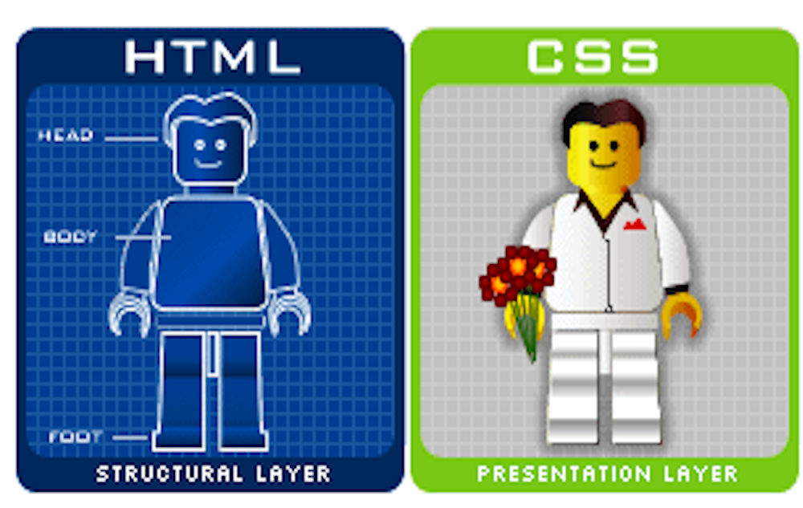

Introducción a CSS
En la primeas páginas web que hemos estado realizando hasta ahora, siempre hemos
insertado en un mismo documento lo que es estructura (etiquetas HTML) con
apariencia (colores, tipografías, alineaciones, etc.)
A partir de ahora, lo que haremos será tener por un lado el documento HTML
que establece la estructura de nuestra web, y por otro lado, un documento
CSS (extensión .css) y/o un apartado en el HTML en donde tendremos css
que será el encargado de dar apariencia y forma a nuestras páginas web.
Así, podemos definir CSS (Cascading Style Sheet) u Hojas de Estilo en Cascada
Este tipo de tecnología, se caracteriza por permitir dar formato, apariencia y
"dinamismo" a nuestras páginas web. NO ES UN LENGUAJE DE PROGRAMACIÓN COMO TAL,
sino que es una tecnología que permite dar apariencia al texto plano generado
con HTML.
Así, podemos establecer y definir que:
- HTML: se utiliza para definir el contenido de nuestras páginas web.
- CSS: se utiliza para definir la presentación de nuestras páginas web


Funcionamiento de CSS
El funcionamiento de las hojas de estilo CSS es el siguiente:
- En las páginas web (archivo.html) se escriben etiquetas que
definen categorías o elementos.
- En las hojas de estilo (archivo.css) se escribe cómo queremos
que sea el estilo o apariencia de esta página web.
- En la página web se escribe qué hoja de estilo queremos utilizar.
En resumen, las hojas de estilo en cascada (CSS) son complementoss a las
etiquetas de HTML
Separan el contenido del documento de todo el aspecto de presentación de este.
Cuando usamos CSS, intentamos evitar la excesiva utilización de tablas en las páginas
Con CSS indicamos que es cada elemento y el formato que queremos aplicarlo y no
directamente en la etiqueta HTML como hacíamos hasta ahora.
A la hora de aplicar CSS en nuestras páginas web, tendremos que tener en cuenta, que
NO se verán igual en un Navegador Chrome, que en un Firefox, Opera, MS Internet Explorer
Edge, etc... Para ello, tendremos que aplicar reglas y métricas que permitan el que
todos los navegadores en la medida de lo posible, puedan ser compatibles con nuestros diseños.
Versiones de CSS
En la actualidad, se puede comentar que exiten las siguientes versiones de CSS disponibles:
- CSS1: Creada en el año 1996. Tenía como características el uso de propiedades
de fuente, colores, alineración, etc.
- CSS2 y CSS2.1:Creadas en el año 1998 y 2005 respectivamente. Son mejoras de la
primera versión añadiendo características tales como posicionamiento de elementos.
- CSS3: Creada en el año 2011 y utilizada en la actualidad*. Se caracteríza por
incorporar funcionalidades a los elementos HTML que hacen que las páginas sean
más dinámicas y acordes a las necesidades solicitadas por el usuario.
Ventajas y Desventajas de CSS
Ventajas
- Mayor control de la presentación del sitio web
- Si necesitamos hacer modificacines de presentación, es mucho más rápido y preciso
al tenerlo todo localizado en un documento .css o en un apartado concreto del HTML
(CSS Interno o Embebido)
- Mayor Legibilidad --> más fácil de interpretar y entender
- Se reduzca la duplicidad de estilos en diferentes lugares.
- Es más fácil hacer páginas web adaptadas a los distintos tipos de dispositivos
Desventajas
- A veces, dependiendo del navegador con el que abramos la página web, se verá de una manera
u otra, y además, las etiquetas serán más compatibles o menos con estos...
- El uso de tablas hasta ahora, nos permitía crear diseños complejos de forma mucho más
sencilla que utilizando CSS.
Ahora, para poder centrar por ejemplo un div o una imagen, deberemos usar las propiedades
CSS disponibles para ello...
Tipos de CSS que podemos utilizar
En HTML, podemos utilizar los siguientes tipos de CSS para aplicar diseño y características
a nuestras páginas web.
- CSS Externo: Es aquel, que a través de un documento externo con estensión
.css, aplica las característcas necesarias a nuestro documentos HTML
para dotarle de apariencia y estilo.
Se adjunta en la cabecera del documento HTML de la siguiente manera:
link rel="stylesheet" href="style.css" todo esto en el head.
- CSS Interno: Se aplica dentro de las etiquetas head de nuestro HTML,
mediante las etiquetas style de apertura y cierre
- CSS Embebido o Inline: Se aplica a la etiqueta HTML correspondiente
mediante el atributo style, seguido de las características que le queramos
introducir a esta.